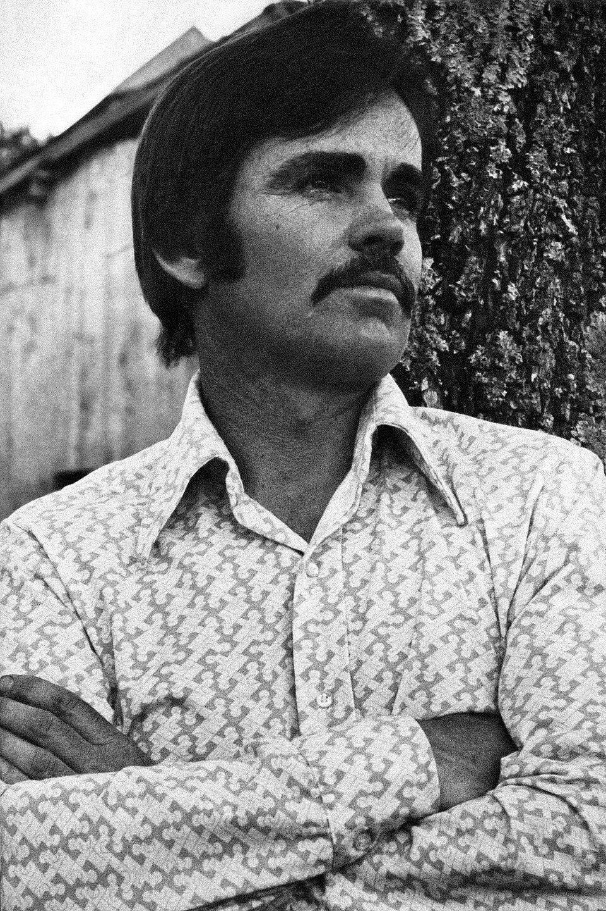

part 1
about the author

- born in rhode island in 1933 and grew up in east tennessee
- dropped out of the university of tennessee to join the air force
- moved around a bit until settling in el paso, texas
- his early works took place in the appalachian south and weren't very successful
- all the pretty horses was his initial successsful work in 1992 and kicked off his career
- eventually moved to sante fe, new mexico later in life and chilled there until his passing
- his writing style is noted for being sparse in punctuation, using untranslated spanish dialogue, and focusing on themes of life, death, and violence
characters
- john grady cole - a sixteen year old boy who is the last in a line of ranchers. has a natural ability with horses.
- lacey rawlins - john grady's best friend.
- jimmy blevins - a young boy with a crazy nice horse who joins john grady and lacey. kind of a nut job.
- john grady's father - a PoW and professional gamber.
- john grady's mother - the owner of the ranch and an aspiring actress.
- john grady's grandfather - the builder of the ranch and father to john grady's mother.
- luisa, abuela, and arturo - hired hands who have worked on the ranch for a long time.
- redbo and junior - john grady's and lacey's horse, respectively.
- mr. franklin - lawyer handling the cole family affairs.
- mary catherine barnett - john grady's ex-girlfriend.
- unnamed girl on black arabian horse - ???
plot
- story starts in san angelo in north texas
- grandpa is ded, but he alive-mogged his seven siblings for a while
- mommy dipped on the fam to be an actress in san antonio, daddy is smoking and going through it
- john grady learns from mr. franklin that mommy going to sell the ranch.
- mary catherine also broke up with john grady - he sees no future and decides to dip
- john grady tries to say goodbye to everyone, is able to see everyone except his mom
- john grady and lacey run away from home to mexico
- on the way jimmy joins them - he is a pain in the ass to lacey but john grady tolerates his tomfoolery
- the travel is chill and idylic at first, but a thunderstorm leads to a naked jimmy with no gear and hungover john grady and lacey
- the mexicans they meet are inviting at first, but eventually a group of workers wants to buy a white boy for themselves
- they enter the town of encantada and find jimmy's horse and gun - eventually a chase occurs and jimmy splits to draw away attention
- john grady and lacey eventually find cowboys herding cattle, and get hired as cowboys themselves
- amongst the cowboys is also an unnamed girl on a black arabian horse (awooga?)
themes
- myth and fairy tales
- the historic west and the modern west
- horses
discussion questions
- how do you feel about mccarthy's writing style? what details in his storytelling stick out to you?
- do you think john grady's decision to leave for mexico is justified? do you think they're cooked as their journey goes on?
- why do you think john grady tolerates jimmy? would you do the same if you were john grady?
- what characters do you like and/or dislike the most?
- do you buy jimmy's lightning superstition? do you think there is any truth to it?
- is john grady's mother justified in her decision to leave for san antonio and sell the ranch?
- would you have sold jimmy to the waxmakers?
- would you have left if you were john grady?